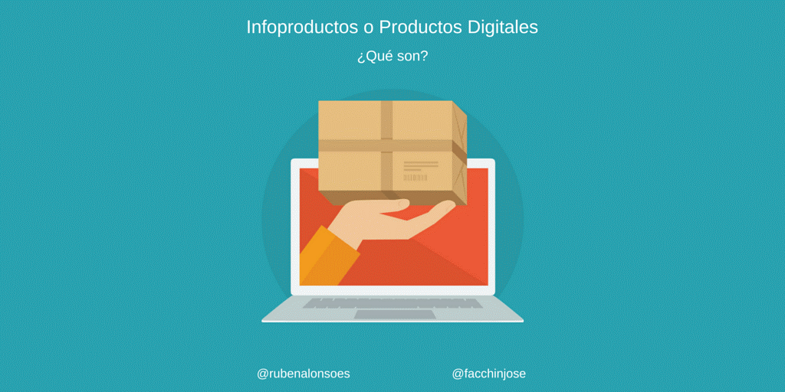

e-commerce de infoproductos
En Internet encontramos tiendas online que venden todo tipo de cosas. Desde productos de lo más variado que puedes comparar en calidad y precio en diferentes sitios, hasta servicios personalizados para atender tus necesidades más inminentes. Entre toda esta variedad, cada vez vemos aparecer a más infoproductores que nos sorprenden con algo nuevo. Y su popularidad no es una casualidad; el formato infoproducto es de los más demandados en marketing digital. Los infoproductos, como he comentado, son una vía excelente para monetizar un negocio online, pues la mayor inversión que debes hacer para ellos es en tiempo, pero no tanto económica. En otras palabras, se podría decir que una vez que los comercialices empezarás a obtener beneficios relativamente rápido (y así lo corroboran muchos profesionales del sector Apostar por incluir infoproductos para tu eCommerce, puede reportar muchos y grandes beneficios a tu actividad digital. Entre los más atractivos, como te decía, suele ser el gran potencial para generar beneficios, pues los negocios basados en la venta de infoproductos se caracterizan por tener un ROI muy alto. También se debe tener en cuenta que los beneficios de estos productos son escalables: • Por un lado, en cuanto cubras gastos estarás generando beneficios, por lo que rápidamente éstos aumentarán. • Por otro lado, cuanto más venda más fácil será vender, ya que unos clientes llaman a otros. Además de los benéficos en términos económicos, hay muchos otros motivos que son interesantes y que debes valorar si estás dudando si crear o no este tipo de formato informativo: • Reputación de marca: Los infoproductos de calidad suponen un factor clave para la mejora de la reputación online. Te presentarás como un experto en la materia, y los usuarios podrán conocer tu valía y todo lo que puedes aportar a tu sector. • Posicionamiento SEO: La reputación online va ligada a tu posicionamiento SEO, y estos productos te van a ayudar a mejorar ambas. Podrás posicionar las páginas de venta de tus productos, y mejorar poco a poco el SEO gracias al tráfico web que llegue hasta ellos.